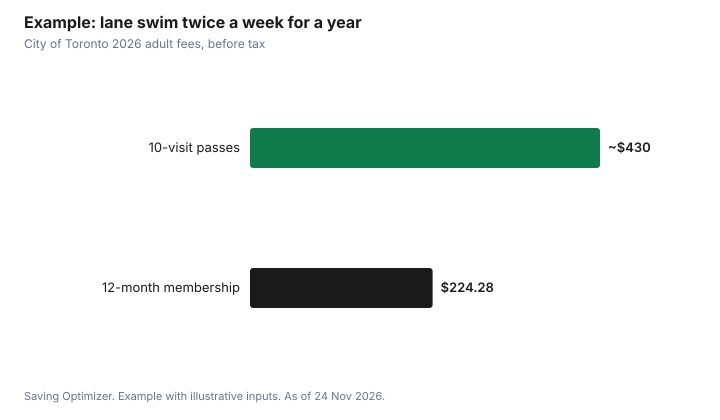

Sports · Canada
Adult Swim Lessons and Lane Swim: A Canadian Cost Guide

City pools are the cheapest place for adults to swim and learn. In Toronto, leisure swim is free at all pools, and lane swim is free at outdoor pools and for adults 60 and over. Indoor lane swim costs $4.39 a visit or $41.38 for 10 visits for adults, before tax. Adult swim lessons (Adult Swim 1 to 3, for ages 17 and up) run through city recreation programs.
Key takeaways
- Toronto 2026: indoor lane swim $4.39 an adult visit or $41.38 for 10 visits, before tax (City of Toronto, checked 24 Nov 2026).
- Lane swim is free at Toronto's outdoor pools, and free indoors for adults 60 and over. Leisure swim is free at all pools.
- FitnessTO Plus Swim (weight rooms, cardio rooms and lane swim) costs $224.28 a year for adults.
- Adult Swim 1 to 3 lessons are for ages 17 and up and start with no prerequisites.
- Example: swimming twice a week for a year costs $430 with 10-visit passes, or $224.28 with a membership.
Toronto lane swim fees
| Pass | Adult | Youth 13-18 | Older adult 60+ |
|---|---|---|---|
| Day pass (FitnessTO Plus Swim) | $4.39 | $2.20 | Free lane swim |
| 10-visit lane swim | $41.38 | $20.90 | $20.90 |
| FitnessTO Plus Swim, 12 months | $224.28 | $112.14 | $112.14 |
Other cities set their own fees. Check your city's recreation site for drop-in fees, passes and free swims.
Adult lessons
Toronto's Adult Swim program covers levels 1 to 3 for ages 17 and up; Adult Swim 1 has no prerequisite and covers front and back swim, glides, breath control and deep water. Many cities and the Lifesaving Society run similar adult lessons. Registration fills fast, so note registration dates. Fee assistance programs can lower costs; see our city recreation assistance guide.
Gear
- Swimsuit, goggles and a cap are enough.
- A lock for the change room.
- A kickboard and pull buoy are usually provided at the pool.
- Swim during less busy times for a better lane.
Plan: an example
An adult swims twice a week, about 104 visits a year, at Toronto's indoor pools. With 10-visit passes: about 10.4 passes × $41.38 = about $430. With a 12-month FitnessTO Plus Swim membership: $224.28, which also includes weight and cardio rooms.

The membership saves about $206 for frequent swimmers. Swimming at outdoor pools in summer is free. For kids' lessons, see swimming lessons for kids.
Sources
- City of Toronto, Drop-in Swimming (lane swim fees, free outdoor lane swim, free older adult lane swim, free leisure swim), checked 24 Nov 2026.
- City of Toronto, Fitness (FitnessTO Plus Swim membership fees), checked 24 Nov 2026.
- City of Toronto, Swim Lessons (Adult Swim, ages 17+), checked 24 Nov 2026.
Frequently asked questions
How much is lane swim in Toronto?
In 2026, indoor lane swim cost $4.39 an adult visit or $41.38 for 10 visits, before tax. Lane swim is free at outdoor pools and for adults 60 and over.
Are there swim lessons for adults?
Yes. Toronto's Adult Swim 1 to 3 is for ages 17 and up, and many other cities offer adult lessons.
Is it too late to learn to swim as an adult?
No. Adult programs start with no prerequisites and let you work at your own pace.
Is a pool membership worth it?
If you swim often. In our example, swimming twice a week costs about $430 with 10-visit passes or $224.28 with a membership in Toronto.
Is swimming free anywhere?
Toronto's leisure swim is free at all pools, and lane swim is free at outdoor pools. Other cities run free swims too.
Researched and drafted with AI assistance and fact-checked against official Canadian sources. How we create content.
Note: Fees are City of Toronto's 2026 fees before tax; other cities differ. Education only.